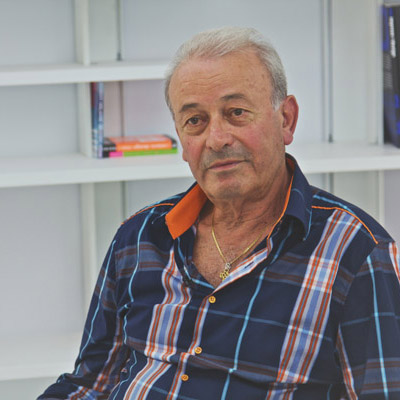
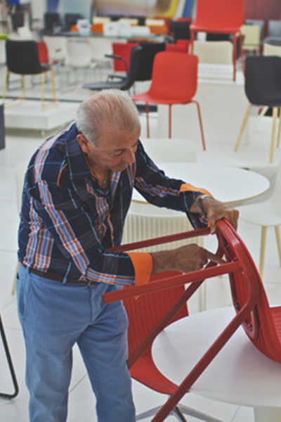

- Event Listeners
- 
-
Franco Dominici
Franco Dominici is the CEO and founder of Segis, an italian furniture company. After traveling the world, Franco came back to Italy and worked in the field of luxury and fashion. He then transferred over his skills and experience to start his own furniture company named “Segis” after the latin word for “saddle”. Back in 1983, when the concept of environmental-friendliness was still quite new, Franco took the company in a modern direction which combined design driven attitudes and environmentally conscious production. The company is known for it’s minimal aesthetics and for it’s innovative production processes which are designed specifically for the company to minimize excess and maximize the utilization of resources. Currently, Franco is working to launch the latest chair in Segis' product line designed by Odo Fioravanti called, "the dragonfly”, into production.
-
"Design is like love. Everybody loves somebody else, how deep and how different is one to the other."
- 

-
"Design to me is like religion. A lot go people talk, but very few believe. A lot of people say things, but very few practice.”
This interview was conducted by Liam Leyland and Sonya Spowage
Segis
Breeze Chair
Dragonfly Chair
Process
0:00
/
0:00